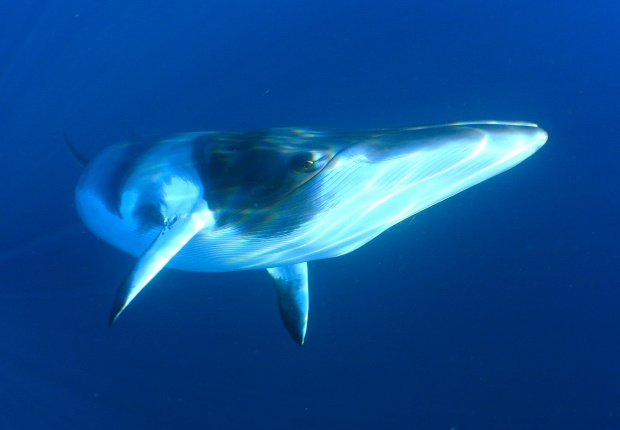

최고 속력이 40km/h이상이고, 약30km/h의 속도로 1시간 이상 헤엄칠 수 있다.
한 때 멸종 위기에 처했지만, 1960년대 고래사냥이 금지된 후 개체수가 점차 늘고있다.
최대 속도는 최대 10km/h 정도로 다른 고래에 비해 많이 느리다.
참고래의 머리 윗부분에는 경결(Callosity)이라 불리우는 피부가 있다. 거칠고 딱딱해져 생긴 하얀 부분으로, 패턴은 사람의 지문처럼 개체마다 서로 달라서, 각 개체를 구별할 수 있게 해준다.
| 고래 |
|---|
| 고래는 앞다리로부터 진화한 앞지느러미 한 쌍을 가지고 있으며 뒷다리는 퇴화되었다. 실제 뒷다리는 태아 시기에는 존재하지만 점차 발생과정 중에 소실된다. 성체의 경우에는 작고 쓸모없는 뼈밖에 남아있지 않다. 두꺼운 지방층은 보온 능력과 부력을 제공한다. 고래의 콧구멍은 다른 포유류와는 달리 머리 윗부분에 존재하는데 그 이유는 물 위에서 숨을 쉬어야 하기 때문이다. 물속에서 숨을 참았다가 물 위로 올라와 호흡한다. |
| 수염고래의 수염은 위턱에 달려 있으며, 각 판의 안쪽 끝은 털 같은 수염들이 겹쳐서 나서 입천장을 덮고 있다. 수염고래는 한 입에 큰물을 먹고 그것을 혀를 이용해 수염 사이로 짜내면서 걸리는 먹이를 걸러먹는다. |
| 출처: [네이버 지식백과] 고래 [whale] (해양학백과) |
|
|
이름(영어 이름) : | 대왕고래(blue whale) | |
이름(영어 이름) : | 참고래(right whale) |
| 분류 : | 동물계 - 수염고래과 - 대왕고래 | 분류 : | 동물계 - 수염고래과 - 남방긴수염고래 | ||
| 특징 : | 몸길이는 보통 24~33m, 무게는 90t에 달한다. 현재 지구의 가장 큰 동물이다. 최고 속력이 40km/h이상이고, 약30km/h의 속도로 1시간 이상 헤엄칠 수 있다. 한 때 멸종 위기에 처했지만, 1960년대 고래사냥이 금지된 후 개체수가 점차 늘고있다. | 특징 : | 몸길이는 보통 13~16 m 사이의 몸 길이를 가지고 있고, 18 m까지 자라기도 한다. 몸무게의 40%정도가 지방이기 때문에, 죽으면 수면 위로 떠오른다고 한다.
최대 속도는 최대 10km/h 정도로 다른 고래에 비해 많이 느리다. 참고래의 머리 윗부분에는 경결(Callosity)이라 불리우는 피부가 있다. 거칠고 딱딱해져 생긴 하얀 부분으로, 패턴은 사람의 지문처럼 개체마다 서로 달라서, 각 개체를 구별할 수 있게 해준다. | ||
| 추가 정보를 알고 싶다면? | 추가 정보를 알고 싶다면? | ||||

|
이름(영어 이름) : | 보리고래(sei whale) |  | 이름(영어 이름) : | 남극밍크고래(Southern Minke Whale) |
| 분류 : | 동물계 - 수염고래과 - 보리고래 | 분류 : | 동물계 - 수염고래과 - 남방쇠정어리고래고래 | ||
| 특징 : | 성숙한 개체의 몸길이는 약 12 ~ 15 m이며, 몸무게는 20 ~ 30t 정도, 최대 45t이다. 2003년에 남극반도에서 보리고래가 만든 "짖는 소리", "휙 소리"같은 신호가 관측된 바가 있다. | 특징 : | 일본에서는 연구용이란 명목으로 밍크고래를 잡고 있으나 사실 대부분이 식용으로 쓰이고 있는 것이 사실로 확인되었다. | ||
| 추가 정보를 알고 싶다면? | 추가 정보를 알고 싶다면? | ||||

|
이름(영어 이름) : | 혹등고래(humpback whale) | |||
| 분류 : | 동물계 - 수염고래과 - 혹등고래 | ||||
| 특징 : | 성체는 몸길이가 12-16m 이고, 무게는 30톤 정도 이다. 복잡한 노래소리로 잘 알려져 있다. | ||||
| 추가 정보를 알고 싶다면? | |||||
2020년 6월
2015442 양현서